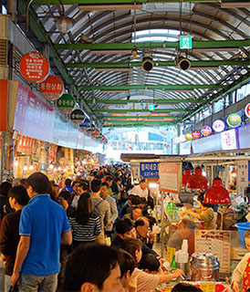
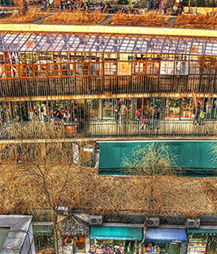

-

DDP
각종 전시, 패션쇼, 신제품발표회, 포럼, 컨퍼런스 등 다양한 문화 행사가 진행되는 복합 문화 공간이다.
-

경복궁
조선시대에 만들어진 다섯 개의 궁궐 중 첫 번째로 만들어진 곳으로, 조선 왕조의 법궁이다.
-

광장시장
광장시장은 110년이 넘는 전통을 가진 시장으로 우리나라 최초 상설시장 전통시장이다.
-

국립현대미술관
한국 근·현대 미술작품을 체계적으로 수집, 보존 및 전시하고, 국제 미술교류를 통하여 현대미술발전에 기여할 목적으로 설립되었다.
-

대림미술관
한국 최초의 사진 전문 미술관으로 출발하여 현재에는 사진뿐만 아니라 다양한 분야의 전시를 소개하며 그 경계를 확장해 나가고 있다.
-

쌈지길
2004년 12월 18일 오픈한 인사동 쌈지길은 우리의 손맛을 느낄 수 있는 공예와 디자인상품을 만날 수 있는 공예전문 쇼핑몰이다.
-

북촌한옥마을
북촌은 고관대작들과 왕족, 사대부들이 모여서 거주해온 고급 살림집터로 한옥은 모두 조선시대의 기와집이다.